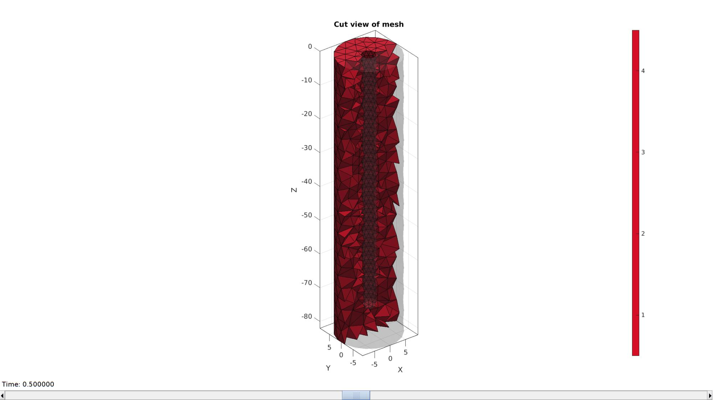
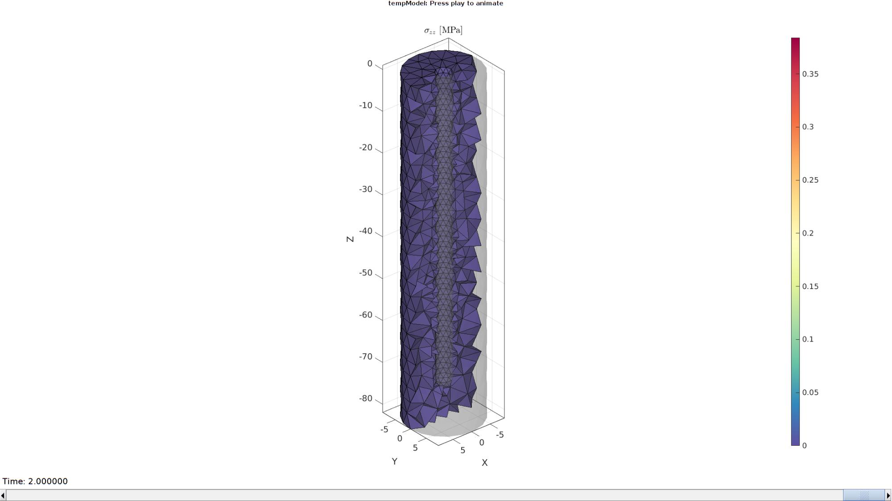

DEMO_febio_0047_cylinder_embedded_probe_01
Below is a demonstration for:
- Building geometry for a tissue segment with an embedded probe
- Defining the boundary conditions
- Coding the febio structure
- Running the model
- Importing and visualizing the displacement results
Contents
Keywords
- febio_spec version 4.0
- febio, FEBio
- probe
- rigid body constraints
- tetrahedral elements, tet4
- triangular elements, tri3
- slab, block, rectangular
- sphere
- static, solid
- hyperelastic, Ogden
- displacement logfile
- stress logfile
clear; close all; clc;
Plot settings
fontSize=15;
faceAlpha=1;
lineWidth1=1.5;
lineWidth2=3;
markerSize1=15;
markerSize2=30;
edgeWidth=2;
edgeColor='k';
faceAlpha1=1;
cMap=spectral(250);
Control parameters
% Path names defaultFolder = fileparts(fileparts(mfilename('fullpath'))); savePath=fullfile(defaultFolder,'data','temp'); % Defining file names febioFebFileNamePart='tempModel'; febioFebFileName=fullfile(savePath,[febioFebFileNamePart,'.feb']); %FEB file name febioLogFileName=[febioFebFileNamePart,'.txt']; %FEBio log file name febioLogFileName_disp=[febioFebFileNamePart,'_disp_out.txt']; %Log file name for exporting displacement febioLogFileName_force=[febioFebFileNamePart,'_force_out.txt']; %Log file name for exporting force febioLogFileName_strainEnergy=[febioFebFileNamePart,'_energy_out.txt']; %Log file name for exporting strain energy density febioLogFileName_strain=[febioFebFileNamePart,'_strain_out.txt']; %Log file name for exporting strain probeHeight=75; probeRadius=2; % The radius of the hemi-spher portion nRefine=0; % Number of |subtri| refinements for icosahedron pointSpacing=3; dAdd=7; tissueRadius=probeRadius+dAdd; tissueHeight=probeHeight+dAdd; volumeFactor=5; displacementMagnitude=-1; %Material parameter set c1=1e-3; %Shear-modulus-like parameter m1=2; %Material parameter setting degree of non-linearity k_factor=1e2; %Bulk modulus factor k=c1*k_factor; %Bulk modulus % FEA control settings numTimeSteps=10; %Number of time steps desired max_refs=25; %Max reforms max_ups=0; %Set to zero to use full-Newton iterations opt_iter=6; %Optimum number of iterations max_retries=5; %Maximum number of retires dtmin=(1/numTimeSteps)/100; %Minimum time step size dtmax=1/numTimeSteps; %Maximum time step size runMode='external';% 'internal' or 'external'
Build probe
probeMeshInputStruct.sphereRadius=probeRadius;% => The radius of the hemi-spher portion probeMeshInputStruct.nRefine=nRefine;% => Number of |subtri| refinements for icosahedron probeMeshInputStruct.cylinderHeight=probeHeight-probeRadius;% => height of the cylinder part probeMeshInputStruct.cylinderStepSize=[];% => Aproximate node spacing for cylinder portion probeMeshInputStruct.patchType='tri'; [Fp,Vp,Cp]=hemiSphereCylMesh(probeMeshInputStruct); Fp=fliplr(Fp); %Invert face orientation Vp(:,3)=Vp(:,3)-max(Vp(:,3)); %Get top curve Eb=patchBoundary(Fp); indProbeTop=edgeListToCurve(Eb); indProbeTop=indProbeTop(1:end-1); Vst=Vp(indProbeTop,:);
cFigure; hold on; gpatch(Fp,Vp,'gw','k'); plotV(Vst,'b.-','lineWidth',lineWidth1,'MarkerSize',markerSize1); patchNormPlot(Fp,Vp); axisGeom(gca,fontSize); drawnow;

Build tissue
%Sketching profile ns=150; t=linspace(0,2*pi,ns); t=t(1:end-1); x=tissueRadius*cos(t); y=tissueRadius*sin(t); z=zeros(size(x)); Vc=[x(:) y(:) z(:)]; np=ceil(max(pathLength(Vc))./pointSpacing); [Vc]=evenlySampleCurve(Vc,np,'pchip',1); % Extruding model cPar.numSteps=round(tissueHeight/pointSpacing); cPar.depth=tissueHeight; cPar.patchType='tri'; cPar.dir=-1; cPar.closeLoopOpt=1; [Fg,Vg]=polyExtrude(Vc,cPar); Fg=fliplr(Fg); Vgb=Vg(cPar.numSteps:cPar.numSteps:end,:); Vgt=Vg(1:cPar.numSteps:end,:);
Cap ends
regionCell={Vgt(:,[1 2]),Vst(:,[1 2])};
[Ft,Vt]=regionTriMesh2D(regionCell,pointSpacing,0,0);
Vt(:,3)=mean(Vgt(:,3));
regionCell={Vgb(:,[1 2])};
[Fb,Vb]=regionTriMesh2D(regionCell,pointSpacing,0,0);
Fb=fliplr(Fb); %flip face orientation
Vb(:,3)=mean(Vgb(:,3));
Visualize
cFigure; hold on; gpatch(Fp,Vp,'rw','k',0.5); gpatch(Fg,Vg,'gw','k',0.5); gpatch(Fb,Vb,'bw','k',0.5); gpatch(Ft,Vt,'bw','k',0.5); plotV(Vgb,'b.-','lineWidth',lineWidth1,'MarkerSize',markerSize1); plotV(Vgt,'b.-','lineWidth',lineWidth1,'MarkerSize',markerSize1); plotV(Vst,'b.-','lineWidth',lineWidth1,'MarkerSize',markerSize1); axisGeom(gca,fontSize); drawnow;
Merge model components
[F,V,C]=joinElementSets({Fg,Ft,Fb,Fp},{Vg,Vt,Vb,Vp});
[F,V]=mergeVertices(F,V);
cFigure; subplot(1,2,1); hold on; gpatch(F,V,C,'none',0.5); axisGeom(gca,fontSize); colormap gjet; icolorbar; subplot(1,2,2); hold on; gpatch(F,V,C); patchNormPlot(F,V,2); plotV(Vst,'b.-','lineWidth',lineWidth1,'MarkerSize',markerSize1); axisGeom(gca,fontSize); colormap gjet; icolorbar; drawnow;

Mesh solid using tetgen
Create tetgen meshing input structure
[regionA]=tetVolMeanEst(F,V); %Volume for a regular tet based on edge lengths V_inner=getInnerPoint(F,V); %Interior point for region inputStruct.stringOpt='-pq1.2AaY'; inputStruct.Faces=F; inputStruct.Nodes=V; inputStruct.holePoints=[]; inputStruct.faceBoundaryMarker=C; %Face boundary markers inputStruct.regionPoints=V_inner; %region points inputStruct.regionA=regionA*volumeFactor; %Desired volume for tets inputStruct.minRegionMarker=2; %Minimum region marker
Mesh model using tetrahedral elements using tetGen
[meshOutput]=runTetGen(inputStruct); %Run tetGen
%%%%%%%%%%%%%%%%%%%%%%%%%%%%%%%%%%%%%%%%%%%%% --- TETGEN Tetrahedral meshing --- 20-Apr-2023 18:10:16 %%%%%%%%%%%%%%%%%%%%%%%%%%%%%%%%%%%%%%%%%%%%% --- Writing SMESH file --- 20-Apr-2023 18:10:16 ----> Adding node field ----> Adding facet field ----> Adding holes specification ----> Adding region specification --- Done --- 20-Apr-2023 18:10:17 --- Running TetGen to mesh input boundary--- 20-Apr-2023 18:10:17 Opening /mnt/data/MATLAB/GIBBON/data/temp/temp.smesh. Delaunizing vertices... Delaunay seconds: 0.05929 Creating surface mesh ... Surface mesh seconds: 0.001515 Recovering boundaries... Boundary recovery seconds: 0.004271 Removing exterior tetrahedra ... Warning: The 1-th region point lies outside the convex hull. Spreading region attributes. Exterior tets removal seconds: 0.001275 Recovering Delaunayness... Delaunay recovery seconds: 0.0017 Refining mesh... 1548 insertions, added 764 points, 15046 tetrahedra in queue. Refinement seconds: 0.023373 Smoothing vertices... Mesh smoothing seconds: 0.035534 Improving mesh... Mesh improvement seconds: 0.001778 Writing /mnt/data/MATLAB/GIBBON/data/temp/temp.1.node. Writing /mnt/data/MATLAB/GIBBON/data/temp/temp.1.ele. Writing /mnt/data/MATLAB/GIBBON/data/temp/temp.1.face. Writing /mnt/data/MATLAB/GIBBON/data/temp/temp.1.edge. Output seconds: 0.02143 Total running seconds: 0.150301 Statistics: Input points: 1162 Input facets: 2320 Input segments: 3480 Input holes: 0 Input regions: 1 Mesh points: 1979 Mesh tetrahedra: 8572 Mesh faces: 18304 Mesh faces on exterior boundary: 2320 Mesh faces on input facets: 2320 Mesh edges on input segments: 3480 Steiner points inside domain: 817 --- Done --- 20-Apr-2023 18:10:17 %%%%%%%%%%%%%%%%%%%%%%%%%%%%%%%%%%%%%%%%%%%%% --- Importing TetGen files --- 20-Apr-2023 18:10:17 --- Done --- 20-Apr-2023 18:10:17
Visualize mesh
meshView(meshOutput);
Access model element and patch data
F=meshOutput.faces; V=meshOutput.nodes; C=meshOutput.faceMaterialID; E=meshOutput.elements; elementMaterialID=meshOutput.elementMaterialID; Fb=meshOutput.facesBoundary; Cb=meshOutput.boundaryMarker;
Define boundary condition node sets
logicRigid= Cb==1 | Cb==3; bcSupportList=Fb(logicRigid,:); bcSupportList=unique(bcSupportList(:)); logicIndentor= Cb==4; bcPrescribeList=Fb(logicIndentor,:); bcPrescribeList=unique(bcPrescribeList(:));
Visualize boundary conditions
cFigure; hold on; gpatch(Fb,V,'bw','none',0.5); hp(1)=plotV(V(bcSupportList,:),'k.','lineWidth',lineWidth1,'MarkerSize',markerSize1); hp(2)=plotV(V(bcPrescribeList,:),'r.','lineWidth',lineWidth1,'MarkerSize',markerSize1); legend(hp,{'BC Full support','BC Prescribed displacement'}); axisGeom(gca,fontSize); drawnow;

Defining the FEBio input structure
See also febioStructTemplate and febioStruct2xml and the FEBio user manual.
%Get a template with default settings [febio_spec]=febioStructTemplate; %febio_spec version febio_spec.ATTR.version='4.0'; %Module section febio_spec.Module.ATTR.type='solid'; %Create control structure for use by all steps stepStruct.Control.time_steps=numTimeSteps; stepStruct.Control.step_size=1/numTimeSteps; stepStruct.Control.solver.max_refs=max_refs; stepStruct.Control.time_stepper.dtmin=dtmin; stepStruct.Control.time_stepper.dtmax=dtmax; stepStruct.Control.time_stepper.max_retries=max_retries; stepStruct.Control.time_stepper.opt_iter=opt_iter; %Add template based default settings to proposed control section [stepStruct.Control]=structComplete(stepStruct.Control,febio_spec.Control,1); %Complement provided with default if missing %Remove control field (part of template) since step specific control sections are used febio_spec=rmfield(febio_spec,'Control'); febio_spec.Step.step{1}.Control=stepStruct.Control; febio_spec.Step.step{1}.ATTR.id=1; febio_spec.Step.step{2}.Control=stepStruct.Control; febio_spec.Step.step{2}.ATTR.id=2; %Material section materialName1='Material1'; febio_spec.Material.material{1}.ATTR.name=materialName1; febio_spec.Material.material{1}.ATTR.type='Ogden'; febio_spec.Material.material{1}.ATTR.id=1; febio_spec.Material.material{1}.c1=c1; febio_spec.Material.material{1}.m1=m1; febio_spec.Material.material{1}.c2=c1; febio_spec.Material.material{1}.m2=-m1; febio_spec.Material.material{1}.k=k; % Mesh section % -> Nodes febio_spec.Mesh.Nodes{1}.ATTR.name='Object1'; %The node set name febio_spec.Mesh.Nodes{1}.node.ATTR.id=(1:size(V,1))'; %The node id's febio_spec.Mesh.Nodes{1}.node.VAL=V; %The nodel coordinates % -> Elements partName1='Part1'; febio_spec.Mesh.Elements{1}.ATTR.name=partName1; %Name of this part febio_spec.Mesh.Elements{1}.ATTR.type='tet4'; %Element type febio_spec.Mesh.Elements{1}.elem.ATTR.id=(1:1:size(E,1))'; %Element id's febio_spec.Mesh.Elements{1}.elem.VAL=E; %The element matrix % -> NodeSets nodeSetName1='bcSupportList'; nodeSetName2='bcPrescribeList'; febio_spec.Mesh.NodeSet{1}.ATTR.name=nodeSetName1; febio_spec.Mesh.NodeSet{1}.VAL=mrow(bcSupportList); febio_spec.Mesh.NodeSet{2}.ATTR.name=nodeSetName2; febio_spec.Mesh.NodeSet{2}.VAL=mrow(bcPrescribeList); %MeshDomains section febio_spec.MeshDomains.SolidDomain.ATTR.name=partName1; febio_spec.MeshDomains.SolidDomain.ATTR.mat=materialName1; %Boundary condition section % -> Fix boundary conditions febio_spec.Boundary.bc{1}.ATTR.name='zero_displacement_xyz'; febio_spec.Boundary.bc{1}.ATTR.type='zero displacement'; febio_spec.Boundary.bc{1}.ATTR.node_set=nodeSetName1; febio_spec.Boundary.bc{1}.x_dof=1; febio_spec.Boundary.bc{1}.y_dof=1; febio_spec.Boundary.bc{1}.z_dof=1; febio_spec.Boundary.bc{2}.ATTR.name='zero_displacement_xz'; febio_spec.Boundary.bc{2}.ATTR.type='zero displacement'; febio_spec.Boundary.bc{2}.ATTR.node_set=nodeSetName2; febio_spec.Boundary.bc{2}.x_dof=0; febio_spec.Boundary.bc{2}.y_dof=1; febio_spec.Boundary.bc{2}.z_dof=1; % -> Prescribe boundary conditions %STEP 1 Up/down febio_spec.Step.step{1}.Boundary.bc{1}.ATTR.name='bcPrescribeList1'; febio_spec.Step.step{1}.Boundary.bc{1}.ATTR.type='prescribed displacement'; febio_spec.Step.step{1}.Boundary.bc{1}.ATTR.node_set=nodeSetName2; febio_spec.Step.step{1}.Boundary.bc{1}.dof='z'; febio_spec.Step.step{1}.Boundary.bc{1}.value.ATTR.lc=1; febio_spec.Step.step{1}.Boundary.bc{1}.value.VAL=displacementMagnitude; febio_spec.Step.step{1}.Boundary.bc{1}.relative=1; febio_spec.Step.step{1}.Boundary.bc{2}.ATTR.name='FixedDisplacement21'; febio_spec.Step.step{1}.Boundary.bc{2}.ATTR.type='zero displacement'; febio_spec.Step.step{1}.Boundary.bc{2}.ATTR.node_set=nodeSetName2; febio_spec.Step.step{1}.Boundary.bc{2}.x_dof=1; febio_spec.Step.step{1}.Boundary.bc{2}.y_dof=1; febio_spec.Step.step{1}.Boundary.bc{2}.z_dof=0; %STEP 2 Left/right febio_spec.Step.step{2}.Boundary.bc{1}.ATTR.name='bcPrescribeList2'; febio_spec.Step.step{2}.Boundary.bc{1}.ATTR.type='prescribed displacement'; febio_spec.Step.step{2}.Boundary.bc{1}.ATTR.node_set=nodeSetName2; febio_spec.Step.step{2}.Boundary.bc{1}.dof='x'; febio_spec.Step.step{2}.Boundary.bc{1}.value.ATTR.lc=2; febio_spec.Step.step{2}.Boundary.bc{1}.value.VAL=displacementMagnitude; febio_spec.Step.step{2}.Boundary.bc{1}.relative=1; febio_spec.Step.step{2}.Boundary.bc{2}.ATTR.name='FixedDisplacement22'; febio_spec.Step.step{2}.Boundary.bc{2}.ATTR.type='zero displacement'; febio_spec.Step.step{2}.Boundary.bc{2}.ATTR.node_set=nodeSetName2; febio_spec.Step.step{2}.Boundary.bc{2}.x_dof=0; febio_spec.Step.step{2}.Boundary.bc{2}.y_dof=1; febio_spec.Step.step{2}.Boundary.bc{2}.z_dof=1; %LoadData section % -> load_controller febio_spec.LoadData.load_controller{1}.ATTR.id=1; febio_spec.LoadData.load_controller{1}.ATTR.name='LC1'; febio_spec.LoadData.load_controller{1}.ATTR.type='loadcurve'; febio_spec.LoadData.load_controller{1}.interpolate='LINEAR'; febio_spec.LoadData.load_controller{1}.extend='CONSTANT'; febio_spec.LoadData.load_controller{1}.points.pt.VAL=[0 0; 0.25 1; 0.5 0; 0.75 -1; 1 0]; febio_spec.LoadData.load_controller{2}.ATTR.id=2; febio_spec.LoadData.load_controller{2}.ATTR.name='LC2'; febio_spec.LoadData.load_controller{2}.ATTR.type='loadcurve'; febio_spec.LoadData.load_controller{2}.interpolate='LINEAR'; febio_spec.LoadData.load_controller{2}.extend='CONSTANT'; febio_spec.LoadData.load_controller{2}.points.pt.VAL=[0 0; 1 0; 1.25 1; 1.5 0; 1.75 -1; 2 0]; %Output section % -> log file febio_spec.Output.logfile.ATTR.file=febioLogFileName; febio_spec.Output.logfile.node_data{1}.ATTR.file=febioLogFileName_disp; febio_spec.Output.logfile.node_data{1}.ATTR.data='ux;uy;uz'; febio_spec.Output.logfile.node_data{1}.ATTR.delim=','; febio_spec.Output.logfile.node_data{2}.ATTR.file=febioLogFileName_force; febio_spec.Output.logfile.node_data{2}.ATTR.data='Rx;Ry;Rz'; febio_spec.Output.logfile.node_data{2}.ATTR.delim=','; febio_spec.Output.logfile.element_data{1}.ATTR.file=febioLogFileName_strain; febio_spec.Output.logfile.element_data{1}.ATTR.data='E1;E2;E3'; febio_spec.Output.logfile.element_data{1}.ATTR.delim=','; % Plotfile section febio_spec.Output.plotfile.compression=0;
Quick viewing of the FEBio input file structure
The febView function can be used to view the xml structure in a MATLAB figure window.
febView(febio_spec); %Viewing the febio file
Exporting the FEBio input file
Exporting the febio_spec structure to an FEBio input file is done using the febioStruct2xml function.
febioStruct2xml(febio_spec,febioFebFileName); %Exporting to file and domNode
Running the FEBio analysis
To run the analysis defined by the created FEBio input file the runMonitorFEBio function is used. The input for this function is a structure defining job settings e.g. the FEBio input file name. The optional output runFlag informs the user if the analysis was run succesfully.
febioAnalysis.run_filename=febioFebFileName; %The input file name febioAnalysis.run_logname=febioLogFileName; %The name for the log file febioAnalysis.disp_on=1; %Display information on the command window febioAnalysis.runMode=runMode; [runFlag]=runMonitorFEBio(febioAnalysis);%START FEBio NOW!!!!!!!!
%%%%%%%%%%%%%%%%%%%%%%%%%%%%%%%%%%%%%%%%%%%%%%%%%%%%%%%%%%%%%%%%%%%%%%%%%%%
--------> RUNNING/MONITORING FEBIO JOB <-------- 20-Apr-2023 18:10:22
FEBio path: /home/kevin/FEBioStudio2/bin/febio4
# Attempt removal of existing log files 20-Apr-2023 18:10:22
* Removal succesful 20-Apr-2023 18:10:22
# Attempt removal of existing .xplt files 20-Apr-2023 18:10:22
* Removal succesful 20-Apr-2023 18:10:22
# Starting FEBio... 20-Apr-2023 18:10:22
Max. total analysis time is: Inf s
* Waiting for log file creation 20-Apr-2023 18:10:22
Max. wait time: 30 s
* Log file found. 20-Apr-2023 18:10:22
# Parsing log file... 20-Apr-2023 18:10:22
number of iterations : 3 20-Apr-2023 18:10:23
number of reformations : 3 20-Apr-2023 18:10:23
------- converged at time : 0.1 20-Apr-2023 18:10:23
number of iterations : 3 20-Apr-2023 18:10:23
number of reformations : 3 20-Apr-2023 18:10:23
------- converged at time : 0.2 20-Apr-2023 18:10:23
number of iterations : 1 20-Apr-2023 18:10:23
number of reformations : 1 20-Apr-2023 18:10:23
------- converged at time : 0.3 20-Apr-2023 18:10:23
number of iterations : 3 20-Apr-2023 18:10:23
number of reformations : 3 20-Apr-2023 18:10:23
------- converged at time : 0.4 20-Apr-2023 18:10:23
number of iterations : 3 20-Apr-2023 18:10:23
number of reformations : 3 20-Apr-2023 18:10:23
------- converged at time : 0.5 20-Apr-2023 18:10:23
number of iterations : 3 20-Apr-2023 18:10:24
number of reformations : 3 20-Apr-2023 18:10:24
------- converged at time : 0.6 20-Apr-2023 18:10:24
number of iterations : 3 20-Apr-2023 18:10:24
number of reformations : 3 20-Apr-2023 18:10:24
------- converged at time : 0.7 20-Apr-2023 18:10:24
number of iterations : 1 20-Apr-2023 18:10:24
number of reformations : 1 20-Apr-2023 18:10:24
------- converged at time : 0.8 20-Apr-2023 18:10:24
number of iterations : 3 20-Apr-2023 18:10:24
number of reformations : 3 20-Apr-2023 18:10:24
------- converged at time : 0.9 20-Apr-2023 18:10:24
number of iterations : 3 20-Apr-2023 18:10:24
number of reformations : 3 20-Apr-2023 18:10:24
------- converged at time : 1 20-Apr-2023 18:10:24
number of iterations : 3 20-Apr-2023 18:10:25
number of reformations : 3 20-Apr-2023 18:10:25
------- converged at time : 1.1 20-Apr-2023 18:10:25
number of iterations : 3 20-Apr-2023 18:10:25
number of reformations : 3 20-Apr-2023 18:10:25
------- converged at time : 1.2 20-Apr-2023 18:10:25
number of iterations : 1 20-Apr-2023 18:10:25
number of reformations : 1 20-Apr-2023 18:10:25
------- converged at time : 1.3 20-Apr-2023 18:10:25
number of iterations : 4 20-Apr-2023 18:10:26
number of reformations : 4 20-Apr-2023 18:10:26
------- converged at time : 1.4 20-Apr-2023 18:10:26
number of iterations : 3 20-Apr-2023 18:10:26
number of reformations : 3 20-Apr-2023 18:10:26
------- converged at time : 1.5 20-Apr-2023 18:10:26
number of iterations : 3 20-Apr-2023 18:10:26
number of reformations : 3 20-Apr-2023 18:10:26
------- converged at time : 1.6 20-Apr-2023 18:10:26
number of iterations : 3 20-Apr-2023 18:10:26
number of reformations : 3 20-Apr-2023 18:10:26
------- converged at time : 1.7 20-Apr-2023 18:10:26
number of iterations : 1 20-Apr-2023 18:10:26
number of reformations : 1 20-Apr-2023 18:10:26
------- converged at time : 1.8 20-Apr-2023 18:10:26
number of iterations : 3 20-Apr-2023 18:10:26
------- converged at time : 1.9 20-Apr-2023 18:10:27
number of iterations : 4 20-Apr-2023 18:10:27
number of reformations : 4 20-Apr-2023 18:10:27
------- converged at time : 2 20-Apr-2023 18:10:27
Elapsed time : 0:00:04 20-Apr-2023 18:10:27
N O R M A L T E R M I N A T I O N
# Done 20-Apr-2023 18:10:27
%%%%%%%%%%%%%%%%%%%%%%%%%%%%%%%%%%%%%%%%%%%%%%%%%%%%%%%%%%%%%%%%%%%%%%%%%%%
Import FEBio results
if runFlag==1 %i.e. a succesful run
Importing nodal displacements from a log file
dataStruct=importFEBio_logfile(fullfile(savePath,febioLogFileName_disp),0,1);
%Access data
N_disp_mat=dataStruct.data; %Displacement
timeVec=dataStruct.time; %Time
%Create deformed coordinate set
V_DEF=N_disp_mat+repmat(V,[1 1 size(N_disp_mat,3)]);
Importing element data from a log file
dataStruct=importFEBio_logfile(fullfile(savePath,febioLogFileName_strain),0,1); %Element data E_data_mat=dataStruct.data; E_VM=sqrt(0.5*( (E_data_mat(:,1,:)-E_data_mat(:,2,:)).^2 + ... (E_data_mat(:,2,:)-E_data_mat(:,3,:)).^2 + ... (E_data_mat(:,3,:)-E_data_mat(:,1,:)).^2 ));
Plotting the simulated results using anim8 to visualize and animate deformations
VE=patchCentre(E,V);
logicCutElements=VE(:,2)<=0;
[F_cut,CF_cut_data]=element2patch(E(logicCutElements,:),E_VM(logicCutElements,:,end));
[indBoundary]=tesBoundary(F_cut);
CV=faceToVertexMeasure(F_cut(indBoundary,:),V,CF_cut_data(indBoundary,:));
% Create basic view and store graphics handle to initiate animation
hf=cFigure; %Open figure /usr/local/MATLAB/R2020a/bin/glnxa64/jcef_helper: symbol lookup error: /lib/x86_64-linux-gnu/libpango-1.0.so.0: undefined symbol: g_ptr_array_copy
gtitle([febioFebFileNamePart,': Press play to animate']);
title('$\sigma_{zz}$ [MPa]','Interpreter','Latex')
hp1=gpatch(Fb,V_DEF(:,:,end),'kw','none',0.25); %Add graphics object to animate
hp2=gpatch(F_cut(indBoundary,:),V_DEF(:,:,end),CV,'k',1); %Add graphics object to animate
hp2.FaceColor='interp';
gpatch(Fb,V,0.5*ones(1,3),'none',0.25); %A static graphics object
axisGeom(gca,fontSize);
colormap(cMap); colorbar;
caxis([0 max(E_VM(:))/3]);
axis(axisLim(V_DEF)); %Set axis limits statically
view(140,30);
camlight headlight;
% Set up animation features
animStruct.Time=timeVec; %The time vector
for qt=1:1:size(N_disp_mat,3) %Loop over time increments
[F_cut,CF_cut_data]=element2patch(E(logicCutElements,:),E_VM(logicCutElements,:,qt));
CV=faceToVertexMeasure(F_cut(indBoundary,:),V,CF_cut_data(indBoundary,:));
%Set entries in animation structure
animStruct.Handles{qt}=[hp1 hp2 hp2]; %Handles of objects to animate
animStruct.Props{qt}={'Vertices','Vertices','CData'}; %Properties of objects to animate
animStruct.Set{qt}={V_DEF(:,:,qt),V_DEF(:,:,qt),CV}; %Property values for to set in order to animate
end
anim8(hf,animStruct); %Initiate animation feature
drawnow;
 end

GIBBON www.gibboncode.org
Kevin Mattheus Moerman, gibbon.toolbox@gmail.com
GIBBON footer text
License: https://github.com/gibbonCode/GIBBON/blob/master/LICENSE
GIBBON: The Geometry and Image-based Bioengineering add-On. A toolbox for image segmentation, image-based modeling, meshing, and finite element analysis.
Copyright (C) 2006-2022 Kevin Mattheus Moerman and the GIBBON contributors
This program is free software: you can redistribute it and/or modify it under the terms of the GNU General Public License as published by the Free Software Foundation, either version 3 of the License, or (at your option) any later version.
This program is distributed in the hope that it will be useful, but WITHOUT ANY WARRANTY; without even the implied warranty of MERCHANTABILITY or FITNESS FOR A PARTICULAR PURPOSE. See the GNU General Public License for more details.
You should have received a copy of the GNU General Public License along with this program. If not, see http://www.gnu.org/licenses/.